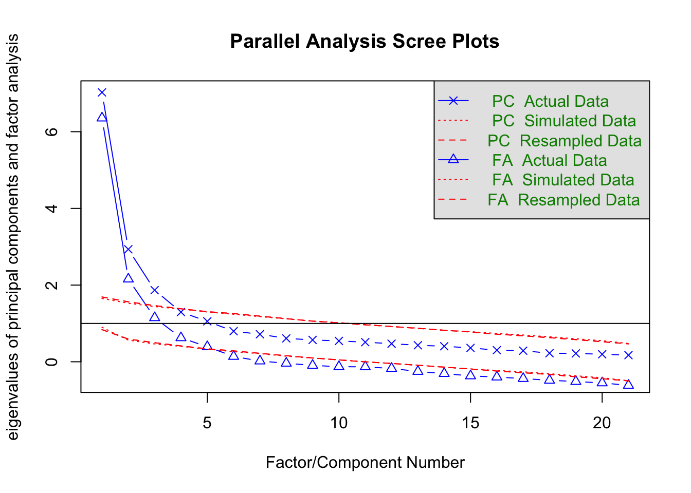

There are three separate samples which were taken from Prolific between the 3rd and 27th of March, 2026.
The first data set corresponds to the 1st EFA condition (participants only saw 1 of the vignettes), the second data set reflects the 2nd EFA condition (participants saw all 3 vignettes, randomised), and the third set of data is the sample collected for the CFA (participants saw all 3 vignettes, randomised).
Cleaning prior to comparison of Within and Between conditions
For comparison, we need to remove the nine items which were added between the two EFA conditions.
df1b$Type<-"Con. 1: Between"df2b$Type<-"Con. 2: Within"Data <-rbind(df1b,df2b)# table(Data$Vignette,Data$Type) # works, but note that extra items for the second data set are still includedremove_these <-c("ST1_8","ST2_8","ST3_8","SE1_11","SE2_11","SE3_11","SE1_12","SE2_12","SE3_12","SE1_13","SE2_13","SE3_13","SO1_8","SO2_8","SO3_8","SO1_9","SO2_9","SO3_9","SO1_10","SO2_10","SO3_10","SO1_11","SO2_11","SO3_11","SO1_12","SO2_12","SO3_12")df2b_filt <- dplyr::filter(df2b,!item %in% remove_these)# table(df2b_filt$item) # cursory checkData <-rbind(df1b, df2b_filt)# table(Data$Vignette,Data$Type) # cursory check Data$item_code <-"Emotion"Data$item_code[str_starts(Data$item,"S")]<-"Scale"Data_items <- dplyr::filter(Data,item_code=="Scale")#table(Data_items$Vignette,Data_items$Type) # cursory check
Any difference between the conditions?
m1 <-lmer(value ~ Type + (1|ID), data = Data_items)summary(m1)
Linear mixed model fit by REML. t-tests use Satterthwaite's method [
lmerModLmerTest]
Formula: value ~ Type + (1 | ID)
Data: Data_items
REML criterion at convergence: 26202.7
Scaled residuals:
Min 1Q Median 3Q Max
-3.3347 -0.6727 0.1334 0.6814 2.9718
Random effects:
Groups Name Variance Std.Dev.
ID (Intercept) 0.2741 0.5235
Residual 1.1737 1.0834
Number of obs: 8568, groups: ID, 239
Fixed effects:
Estimate Std. Error df t value Pr(>|t|)
(Intercept) 3.37616 0.04236 254.40960 79.702 <2e-16 ***
TypeCon. 2: Within -0.14876 0.08195 217.20307 -1.815 0.0709 .
---
Signif. codes: 0 '***' 0.001 '**' 0.01 '*' 0.05 '.' 0.1 ' ' 1
Correlation of Fixed Effects:
(Intr)
TypCn.2:Wth -0.517
# Seems there is no significant difference between the conditions!S <-summarise(group_by(Data_items, Type), M=mean(value), SD=sd(value))print(S)
# A tibble: 2 × 3
Type M SD
<chr> <dbl> <dbl>
1 Con. 1: Between 3.38 1.17
2 Con. 2: Within 3.23 1.25
# Cursory double check that the items are the same in the conditions#between <- table(dplyr::filter(Data_items,Type=="Between")$item)#within <- table(dplyr::filter(Data_items,Type=="Within")$item)
We conducted a parallel analysis for each condition separately. We removed items with low communialities (commented out) and reran the EFA analysis for both conditions.
There is a issue between set.seed and fa.parallel, where fa.parallel simulations do not abide by the set.seed call. So, we conducted a simulation of fa.parallel for each condition to see which factor model is supported by a majority of simulations. Because of this, the plotting occasionally report different results than the majority opinion (5 factors are hard coded following simulation of 1000 fa.parallel simulations).
set.seed(3108)# simple function for obtaining communality descriptions of modelscomm_table <-function(x) list(Mean =mean(x$communality),Median =median(x$communality),Range =range(x$communality))#-------------------------------------------------------------------------------# Condition 1: EFA#output <- fa.parallel(Con1_all, fm = "ml",sim = FALSE)###### Special section to check the number of factors with extra simulation#simulate_simulation<-FALSE#if(simulate_simulation==TRUE){# NFACT<-NULL# for (k in 1:1000) {# output <- fa.parallel(Con1_all, fm = "ml",plot=FALSE)# NFACT[k]<-output$nfact# }#}##table(NFACT)## NFACT## 4 5 ## 331 669 ## 0.331 0.669##output$nfact <- 5 # Hard coded to reflect the majority from the simulation##fa_solution_Con1 <- fa(Con1_all, nfactors = output$nfact, n.iter = 0, # rotate = "oblimin", missing = TRUE, warnings = TRUE, # fm = "ml")##print(fa_solution_Con1)#print(fa_solution_Con1$loadings, cutoff = 0.2)##print(fa_solution_Con1$communality)#comm_table(fa_solution_Con1)#-------------------------------------------------------------------------------# Condition 1: EFA with item communalities less than .4 removedCon1_all_con <- dplyr::select(Con1_all,-ST_7,-SE_5,-SO_6)output <-fa.parallel(Con1_all_con, fm ="ml")

Parallel analysis suggests that the number of factors = 5 and the number of components = 3
# Simulating fa.parallel simulation --------------------------------------------#simulate_simulation <- FALSE#if(simulate_simulation==TRUE){# NFACT<-NULL# for (k in 1:1000) {# output <- fa.parallel(Con1_all_con, fm = "ml",plot=FALSE)# NFACT[k]<-output$nfact# }#}# table(NFACT)# 4 5# 229 771# 0.229 0.771output$nfact <-5# Hard coded to reflect the majority of simulations# EFA on Condition 1 -----------------------------------------------------------fa_solution_Con1_clean <-fa(Con1_all_con, nfactors = output$nfact, n.iter =0, rotate ="oblimin", missing =TRUE, warnings =TRUE, fm ="ml")print(fa_solution_Con1_clean)
Factor Analysis using method = ml
Call: fa(r = Con1_all_con, nfactors = output$nfact, n.iter = 0, rotate = "oblimin",
missing = TRUE, warnings = TRUE, fm = "ml")
Standardized loadings (pattern matrix) based upon correlation matrix
ML2 ML3 ML4 ML5 ML1 h2 u2 com
ST_1 0.11 0.15 0.55 -0.01 0.03 0.43 0.57 1.2
ST_2 0.05 -0.07 0.70 0.07 -0.04 0.51 0.49 1.1
ST_3 0.08 -0.06 0.41 0.39 -0.20 0.41 0.59 2.6
ST_4 -0.07 0.29 0.49 0.07 0.11 0.53 0.47 1.9
ST_5 -0.03 0.26 0.28 0.39 0.02 0.49 0.51 2.7
ST_6 -0.14 0.04 0.58 0.06 0.21 0.52 0.48 1.4
SE_1 0.76 0.11 -0.13 0.11 -0.05 0.63 0.37 1.2
SE_2 0.90 -0.12 0.03 -0.04 0.00 0.78 0.22 1.0
SE_3 0.74 0.03 0.07 0.02 0.07 0.63 0.37 1.0
SE_4 0.66 0.20 -0.05 -0.01 0.02 0.50 0.50 1.2
SE_6 0.26 -0.06 0.10 0.57 0.08 0.61 0.39 1.6
SE_7 0.00 -0.10 0.04 0.69 0.18 0.60 0.40 1.2
SE_8 0.18 0.30 0.26 0.19 0.06 0.44 0.56 3.5
SE_9 0.70 -0.09 0.06 -0.01 0.02 0.49 0.51 1.0
SE_10 0.05 0.20 0.10 0.58 0.08 0.58 0.42 1.4
SO_1 0.05 0.40 -0.05 0.36 0.12 0.41 0.59 2.2
SO_2 0.10 0.56 0.23 -0.22 0.22 0.58 0.42 2.1
SO_3 0.02 0.04 -0.05 0.04 0.87 0.78 0.22 1.0
SO_4 0.02 0.83 0.04 -0.05 0.01 0.71 0.29 1.0
SO_5 -0.03 0.90 -0.03 0.07 -0.02 0.79 0.21 1.0
SO_7 0.00 -0.05 0.05 0.03 0.88 0.80 0.20 1.0
ML2 ML3 ML4 ML5 ML1
SS loadings 3.16 2.66 2.24 2.15 2.00
Proportion Var 0.15 0.13 0.11 0.10 0.10
Cumulative Var 0.15 0.28 0.38 0.49 0.58
Proportion Explained 0.26 0.22 0.18 0.18 0.16
Cumulative Proportion 0.26 0.48 0.66 0.84 1.00
With factor correlations of
ML2 ML3 ML4 ML5 ML1
ML2 1.00 0.12 0.16 0.36 0.23
ML3 0.12 1.00 0.35 0.17 0.37
ML4 0.16 0.35 1.00 0.46 0.38
ML5 0.36 0.17 0.46 1.00 0.36
ML1 0.23 0.37 0.38 0.36 1.00
Mean item complexity = 1.5
Test of the hypothesis that 5 factors are sufficient.
df null model = 210 with the objective function = 11.29 with Chi Square = 1932.73
df of the model are 115 and the objective function was 1.05
The root mean square of the residuals (RMSR) is 0.03
The df corrected root mean square of the residuals is 0.04
The harmonic n.obs is 180 with the empirical chi square 73.73 with prob < 1
The total n.obs was 180 with Likelihood Chi Square = 176.65 with prob < 0.00019
Tucker Lewis Index of factoring reliability = 0.933
RMSEA index = 0.054 and the 90 % confidence intervals are 0.038 0.07
BIC = -420.54
Fit based upon off diagonal values = 0.99
Measures of factor score adequacy
ML2 ML3 ML4 ML5 ML1
Correlation of (regression) scores with factors 0.95 0.95 0.89 0.90 0.94
Multiple R square of scores with factors 0.90 0.89 0.80 0.81 0.89
Minimum correlation of possible factor scores 0.80 0.79 0.60 0.63 0.78
Convergent Validity: EFA Factor Scores vs. External Measures
MEEM
HAAS
MEC
EDR
FM
CB
PEP
AIA
pos_high
pos_low
neg_high
neg_low
Brain stem reflex
Entrainment
Evaluative conditioning
Contagion
Visual imagery
Episodic memory
Expectancy
Aesthetic judgment
Structure
0.483
0.568
0.443
0.538
0.618
0.371
0.172
0.104
-0.041
0.319
0.313
0.181
0.300
0.347
0.381
0.159
0.595
Memory
0.466
0.453
0.514
0.558
0.404
0.337
0.129
0.026
0.049
0.131
0.300
0.622
0.437
0.379
0.362
-0.059
0.216
Identiy
0.520
0.571
0.530
0.643
0.564
0.448
0.210
0.123
0.004
0.293
0.294
0.307
0.350
0.433
0.426
0.121
0.465
Object
0.354
0.364
0.448
0.413
0.523
0.300
0.119
0.028
-0.042
0.371
0.149
0.114
0.171
0.288
0.288
0.245
0.480
Culture
0.310
0.338
0.432
0.334
0.439
0.327
0.082
0.110
0.063
0.328
0.199
0.185
0.237
0.282
0.246
0.114
0.306
CFA Analysis
Prepping the data for CFA analysis
Includes renaming of columns for aggregation and binding the vignettes into a single object to put forward for lavaan. Also, a check of the suitability of the data for factor analysis.
# What about the skew and kurtosis of the CFA dataCFA_item_stats <- psych::describe(CFA_all_no_vig, na.rm=FALSE, interp =TRUE, skew =TRUE, ranges =FALSE, quant =c(.25,.75))knitr::kable(CFA_item_stats, digits =3, caption ="CFA: Item Level Statistics",align =c("c", "c", "r", "r", "r", "r", "r", "r", "r", "r"))
CFA: Item Level Statistics
vars
n
mean
sd
skew
kurtosis
se
Q0.25
Q0.75
ST1_1
1
300
3.240
1.228
-0.311
-0.822
0.071
2
4
ST1_2
2
300
3.207
1.247
-0.259
-0.930
0.072
2
4
ST1_3
3
300
3.863
1.017
-0.942
0.579
0.059
3
5
ST1_4
4
300
3.130
1.243
-0.236
-0.991
0.072
2
4
ST1_5
5
300
3.493
1.120
-0.525
-0.417
0.065
3
4
ST1_6
6
300
2.963
1.186
-0.157
-0.921
0.068
2
4
SE1_1
7
300
3.853
1.173
-0.991
0.208
0.068
3
5
SE1_2
8
300
3.947
1.074
-1.007
0.443
0.062
3
5
SE1_3
9
300
3.827
1.120
-0.924
0.226
0.065
3
5
SE1_4
10
300
3.620
1.192
-0.657
-0.470
0.069
3
5
SE1_5
11
300
3.010
1.287
-0.103
-1.038
0.074
2
4
SE1_6
12
300
3.877
1.058
-0.887
0.318
0.061
3
5
SE1_7
13
300
3.510
1.135
-0.593
-0.322
0.066
3
4
SE1_8
14
300
3.287
1.190
-0.410
-0.674
0.069
3
4
SE1_9
15
300
3.807
1.149
-0.925
0.127
0.066
3
5
SE1_10
16
300
3.270
1.178
-0.361
-0.695
0.068
3
4
SO1_1
17
300
3.617
1.055
-0.622
-0.148
0.061
3
4
SO1_2
18
300
2.897
1.235
-0.006
-1.026
0.071
2
4
SO1_3
19
300
2.687
1.169
0.149
-0.908
0.067
2
4
SO1_4
20
300
2.873
1.315
0.049
-1.212
0.076
2
4
SO1_5
21
300
3.033
1.300
-0.089
-1.132
0.075
2
4
SO1_6
22
300
3.323
1.159
-0.378
-0.675
0.067
3
4
SO1_7
23
300
2.770
1.206
0.059
-1.029
0.070
2
4
ST1_8
24
300
4.193
0.882
-1.403
2.516
0.051
4
5
SE1_12
25
300
3.163
1.223
-0.378
-0.902
0.071
2
4
SE1_13
26
300
2.840
1.180
0.079
-0.832
0.068
2
4
SO1_8
27
300
3.030
1.260
-0.216
-1.085
0.073
2
4
SO1_10
28
300
2.957
1.163
-0.120
-0.845
0.067
2
4
SO1_11
29
300
3.200
1.293
-0.272
-1.035
0.075
2
4
SO1_12
30
300
2.717
1.164
0.169
-0.821
0.067
2
4
Running a CFA
Corresponds to the third data sample collected (df3b). First, we take the best 3 items from the EFA to confirm the EFA model. Second, we evaluate which items are best from the new sample and tier our CFA analysis (e.g., all from EFA, best 4, best 3).
set.seed(3108)# Best 3 items from EFA condition 2 taken into a CFA modelMMgEFA <-'Structure =~ ST1_3 + ST1_6 + ST1_2Memory =~ SE1_2 + SE1_1 + SE1_3Identity =~ SE1_13 + SE1_10 + SE1_12Object =~ SO1_4 + SO1_5 + SO1_2Culture =~ SO1_3 + SO1_7 + SO1_12'fit_groupEFA <- lavaan::cfa(model = MMgEFA, data = CFA_all, meanstructure =TRUE, estimator ="MLR", cluster ="ID") print(summary(fit_groupEFA, standardized =TRUE, fit.measures =TRUE))
$Structure
Composite `Structure` is composed of observed variables:
ST1_3, ST1_6, ST1_2
True-score variance is represented by common factor(s):
Structure
Total variance of composite `Structure` determined from the unrestricted model.
The proportion attributable to "true" scores is its model-based estimate of reliability ("omega"):
[1] 0.815
$Memory
Composite `Memory` is composed of observed variables:
SE1_2, SE1_1, SE1_3
True-score variance is represented by common factor(s):
Memory
Total variance of composite `Memory` determined from the unrestricted model.
The proportion attributable to "true" scores is its model-based estimate of reliability ("omega"):
[1] 0.907
$Identity
Composite `Identity` is composed of observed variables:
SE1_13, SE1_10, SE1_12
True-score variance is represented by common factor(s):
Identity
Total variance of composite `Identity` determined from the unrestricted model.
The proportion attributable to "true" scores is its model-based estimate of reliability ("omega"):
[1] 0.858
$Object
Composite `Object` is composed of observed variables:
SO1_4, SO1_5, SO1_2
True-score variance is represented by common factor(s):
Object
Total variance of composite `Object` determined from the unrestricted model.
The proportion attributable to "true" scores is its model-based estimate of reliability ("omega"):
[1] 0.88
$Culture
Composite `Culture` is composed of observed variables:
SO1_3, SO1_7, SO1_12
True-score variance is represented by common factor(s):
Culture
Total variance of composite `Culture` determined from the unrestricted model.
The proportion attributable to "true" scores is its model-based estimate of reliability ("omega"):
[1] 0.904
# Great model!# We know that this model is suitable and it confirms the EFA. # Considering the items differ, are there other models which fit the five factors?#-------------------------------------------------------------------------------# CFA on all of the high loading EFA items, lets see if a good model is in there.MMg <-'Structure =~ ST1_1 + ST1_2 + ST1_3 + ST1_4 + ST1_5 + ST1_6 + ST1_8Memory =~ SE1_1 + SE1_2 + SE1_3 + SE1_4 + SE1_5 + SE1_6 + SE1_7 + SE1_9 + SO1_11Identity =~ SE1_8 + SE1_10 + SE1_12 + SE1_13Object =~ SO1_1 + SO1_2 + SO1_4 + SO1_5 + SO1_6 + SO1_8 + SO1_10Culture =~ SO1_3 + SO1_7 + SO1_12'fit_group1 <- lavaan::cfa(model = MMg, data = CFA_all, meanstructure =TRUE,estimator ="MLR", cluster ="ID")
Warning: lavaan->lav_model_vcov():
The variance-covariance matrix of the estimated parameters (vcov) does not
appear to be positive definite! The smallest eigenvalue (= 2.089480e-15)
is close to zero. This may be a symptom that the model is not identified.
$Structure
Composite `Structure` is composed of observed variables:
ST1_4, ST1_6, ST1_2
True-score variance is represented by common factor(s):
Structure
Total variance of composite `Structure` determined from the unrestricted model.
The proportion attributable to "true" scores is its model-based estimate of reliability ("omega"):
[1] 0.843
$Memory
Composite `Memory` is composed of observed variables:
SE1_9, SE1_2, SE1_1
True-score variance is represented by common factor(s):
Memory
Total variance of composite `Memory` determined from the unrestricted model.
The proportion attributable to "true" scores is its model-based estimate of reliability ("omega"):
[1] 0.919
$Identity
Composite `Identity` is composed of observed variables:
SE1_8, SE1_10, SE1_13
True-score variance is represented by common factor(s):
Identity
Total variance of composite `Identity` determined from the unrestricted model.
The proportion attributable to "true" scores is its model-based estimate of reliability ("omega"):
[1] 0.858
$Object
Composite `Object` is composed of observed variables:
SO1_4, SO1_5, SO1_2
True-score variance is represented by common factor(s):
Object
Total variance of composite `Object` determined from the unrestricted model.
The proportion attributable to "true" scores is its model-based estimate of reliability ("omega"):
[1] 0.882
$Culture
Composite `Culture` is composed of observed variables:
SO1_3, SO1_7, SO1_12
True-score variance is represented by common factor(s):
Culture
Total variance of composite `Culture` determined from the unrestricted model.
The proportion attributable to "true" scores is its model-based estimate of reliability ("omega"):
[1] 0.904
# Looking at the discriminat validity for Model 4 ------------------------------semTools::discriminantValidity(object = fit_group3, cutoff =0.85)
Some of the latent variable variances are estimated instead of fixed to 1. The model is re-estimated by scaling the latent variables by fixing their variances and freeing all factor loadings.
# For both, all of the factor correlations pass the strict cutoff of 0.85# Identity-Structure and Culture-Identity have the highest#-------------------------------------------------------------------------------# Model 1 - Top 3 items from EFAfit_configEFA <- lavaan::cfa(model = MMgEFA, data = CFA_all, estimator ="MLR",meanstructure =TRUE, group ="vignette")fit_metricEFA <- lavaan::cfa(model = MMgEFA, data = CFA_all, estimator ="MLR",meanstructure =TRUE, group ="vignette", group.equal ="loadings")fit_scalarEFA <- lavaan::cfa(model = MMgEFA, data = CFA_all, estimator ="MLR",meanstructure =TRUE, group ="vignette", group.equal =c("loadings","intercepts"))fit_strictEFA <- lavaan::cfa(model = MMgEFA, data = CFA_all, estimator ="MLR",meanstructure =TRUE, group ="vignette", group.equal =c("loadings","intercepts","residuals"))lavaan::lavTestLRT(fit_configEFA, fit_metricEFA, fit_scalarEFA, fit_strictEFA)
Scaled Chi-Squared Difference Test (method = "satorra.bentler.2001")
lavaan->lavTestLRT():
lavaan NOTE: The "Chisq" column contains standard test statistics, not the
robust test that should be reported per model. A robust difference test is
a function of two standard (not robust) statistics.
Df AIC BIC Chisq Chisq diff RMSEA Df diff Pr(>Chisq)
fit_configEFA 240 11338 11949 378.37
fit_metricEFA 260 11325 11862 405.13 24.962 0.051572 20 0.20287
fit_scalarEFA 280 11302 11765 421.77 16.039 0.000000 20 0.71423
fit_strictEFA 310 11315 11666 494.67 40.416 0.079134 30 0.09706 .
---
Signif. codes: 0 '***' 0.001 '**' 0.01 '*' 0.05 '.' 0.1 ' ' 1
# Looks like the confirmed EFA model passes all invariance# Full fit table for the invariance sequence for EFA model ---------------------invEFA <-rbind(collect_fit(fit_configEFA, "Configural", include_ic =FALSE), collect_fit(fit_metricEFA, "Metric", include_ic =FALSE), collect_fit(fit_scalarEFA, "Scalar", include_ic =FALSE), collect_fit(fit_strictEFA, "Strict", include_ic =FALSE))knitr::kable(invEFA, caption ="Model EFA: Measurement Invariance Fit Indices", align =c("l", "r", "r", "r", "r", "r", "r", "c", "r"))
Model EFA: Measurement Invariance Fit Indices
Model
χ²
df
p
CFI
TLI
RMSEA
90% CI
SRMR
Configural
378.37
240
0
0.952
0.937
0.076
[0.061, 0.09]
0.058
Metric
405.13
260
0
0.950
0.939
0.075
[0.06, 0.089]
0.068
Scalar
421.77
280
0
0.951
0.945
0.071
[0.057, 0.085]
0.071
Strict
494.67
310
0
0.936
0.935
0.077
[0.064, 0.09]
0.073
# Δ fit indices table for EFA model --------------------------------------------deltaEFA <-rbind(delta_fit(fit_configEFA, fit_metricEFA, "Configural", "Metric"),delta_fit(fit_metricEFA, fit_scalarEFA, "Metric", "Scalar"),delta_fit(fit_scalarEFA, fit_strictEFA, "Scalar", "Strict"))knitr::kable(deltaEFA, caption ="Model EFA: Δ Invariance Tests", align =c("l", "r", "r", "r", "c", "r", "r"))
Model EFA: Δ Invariance Tests
Comparison
ΔCFI
ΔRMSEA
ΔSRMR
∆Gamma hat
ΔMcDonald’s NCI
Configural → Metric
-0.002
-0.001
0.010
-0.003
-0.009
Metric → Scalar
0.001
-0.004
0.003
0.001
0.004
Scalar → Strict
-0.015
0.006
0.002
-0.017
-0.054
# Discriminant validity for EFA model ------------------------------------------semTools::discriminantValidity(object = fit_groupEFA, cutoff =0.85)
Some of the latent variable variances are estimated instead of fixed to 1. The model is re-estimated by scaling the latent variables by fixing their variances and freeing all factor loadings.
# All of the factor correlations pass the strict cutoff of 0.85# Identity-Structure and Culture-Identity are again highest correlations# Not as strong as in the Model 4 but Identity still has correlations across all factors
Making a Item Description Table for the Best Models
make_loading_table(fit_groupEFA, CFA_all, "CFA Loadings: EFA Model Confirmation")
CFA Loadings: EFA Model Confirmation
Item
Factor
Standardized
Mean
SD
ST1_2
Structure
0.82
3.21
1.25
ST1_3
Structure
0.68
3.86
1.02
ST1_6
Structure
0.80
2.96
1.19
SE1_1
Memory
0.89
3.85
1.17
SE1_2
Memory
0.88
3.95
1.07
SE1_3
Memory
0.86
3.83
1.12
SE1_10
Identity
0.82
3.27
1.18
SE1_12
Identity
0.81
3.16
1.22
SE1_13
Identity
0.82
2.84
1.18
SO1_2
Object
0.71
2.90
1.23
SO1_4
Object
0.91
2.87
1.32
SO1_5
Object
0.88
3.03
1.30
SO1_12
Culture
0.83
2.72
1.16
SO1_3
Culture
0.90
2.69
1.17
SO1_7
Culture
0.88
2.77
1.21
make_loading_table(fit_group3, CFA_all, "CFA Loadings: Model 4")
CFA Loadings: Model 4
Item
Factor
Standardized
Mean
SD
ST1_2
Structure
0.80
3.21
1.25
ST1_4
Structure
0.82
3.13
1.24
ST1_6
Structure
0.79
2.96
1.19
SE1_1
Memory
0.84
3.85
1.17
SE1_2
Memory
0.91
3.95
1.07
SE1_9
Memory
0.92
3.81
1.15
SE1_10
Identity
0.81
3.27
1.18
SE1_13
Identity
0.81
2.84
1.18
SE1_8
Identity
0.84
3.29
1.19
SO1_2
Object
0.71
2.90
1.23
SO1_4
Object
0.90
2.87
1.32
SO1_5
Object
0.88
3.03
1.30
SO1_12
Culture
0.83
2.72
1.16
SO1_3
Culture
0.90
2.69
1.17
SO1_7
Culture
0.88
2.77
1.21
Testing dimensiality of constructs (unidimensional, bifactor, hierarchical)
$general
Composite `general` is composed of observed variables:
ST1_3, ST1_6, ST1_2, SE1_2, SE1_1, SE1_3, SE1_13, SE1_10, SE1_12, SO1_4, SO1_5, SO1_2, SO1_3, SO1_7, SO1_12
True-score variance is represented by common factor(s):
general
Total variance of composite `general` determined from the unrestricted model.
The proportion attributable to "true" scores is its model-based estimate of reliability ("omega"):
[1] 0.805
$Structure
Composite `Structure` is composed of observed variables:
ST1_3, ST1_6, ST1_2
True-score variance is represented by common factor(s):
Structure
Total variance of composite `Structure` determined from the unrestricted model.
The proportion attributable to "true" scores is its model-based estimate of reliability ("omega"):
[1] 0.43
$Memory
Composite `Memory` is composed of observed variables:
SE1_2, SE1_1, SE1_3
True-score variance is represented by common factor(s):
Memory
Total variance of composite `Memory` determined from the unrestricted model.
The proportion attributable to "true" scores is its model-based estimate of reliability ("omega"):
[1] 0.596
$Identity
Composite `Identity` is composed of observed variables:
SE1_13, SE1_10, SE1_12
True-score variance is represented by common factor(s):
Identity
Total variance of composite `Identity` determined from the unrestricted model.
The proportion attributable to "true" scores is its model-based estimate of reliability ("omega"):
[1] 0.072
$Object
Composite `Object` is composed of observed variables:
SO1_4, SO1_5, SO1_2
True-score variance is represented by common factor(s):
Object
Total variance of composite `Object` determined from the unrestricted model.
The proportion attributable to "true" scores is its model-based estimate of reliability ("omega"):
[1] 0.613
$Culture
Composite `Culture` is composed of observed variables:
SO1_3, SO1_7, SO1_12
True-score variance is represented by common factor(s):
Culture
Total variance of composite `Culture` determined from the unrestricted model.
The proportion attributable to "true" scores is its model-based estimate of reliability ("omega"):
[1] 0.436
# ωT: sub scale omega for each factorcompRelSEM(fit_bifac, tau.eq =FALSE, ord.scale =FALSE)
$general
Composite `general` is composed of observed variables:
ST1_3, ST1_6, ST1_2, SE1_2, SE1_1, SE1_3, SE1_13, SE1_10, SE1_12, SO1_4, SO1_5, SO1_2, SO1_3, SO1_7, SO1_12
True-score variance is represented by common factor(s):
general, Structure, Memory, Identity, Object, Culture
Total variance of composite `general` determined from the unrestricted model.
The proportion attributable to "true" scores is its model-based estimate of reliability ("omega"):
[1] 0.966
$Structure
Composite `Structure` is composed of observed variables:
ST1_3, ST1_6, ST1_2
True-score variance is represented by common factor(s):
general, Structure
Total variance of composite `Structure` determined from the unrestricted model.
The proportion attributable to "true" scores is its model-based estimate of reliability ("omega"):
[1] 0.826
$Memory
Composite `Memory` is composed of observed variables:
SE1_2, SE1_1, SE1_3
True-score variance is represented by common factor(s):
general, Memory
Total variance of composite `Memory` determined from the unrestricted model.
The proportion attributable to "true" scores is its model-based estimate of reliability ("omega"):
[1] 0.908
$Identity
Composite `Identity` is composed of observed variables:
SE1_13, SE1_10, SE1_12
True-score variance is represented by common factor(s):
general, Identity
Total variance of composite `Identity` determined from the unrestricted model.
The proportion attributable to "true" scores is its model-based estimate of reliability ("omega"):
[1] 0.909
$Object
Composite `Object` is composed of observed variables:
SO1_4, SO1_5, SO1_2
True-score variance is represented by common factor(s):
general, Object
Total variance of composite `Object` determined from the unrestricted model.
The proportion attributable to "true" scores is its model-based estimate of reliability ("omega"):
[1] 0.879
$Culture
Composite `Culture` is composed of observed variables:
SO1_3, SO1_7, SO1_12
True-score variance is represented by common factor(s):
general, Culture
Total variance of composite `Culture` determined from the unrestricted model.
The proportion attributable to "true" scores is its model-based estimate of reliability ("omega"):
[1] 0.905
# ω for subscales are all strong (.814-.907), factors seem stable independent of a general factor.# Identity may be functioning as the general factor given it's correlationsbifactorIndices(fit_bifac, UniLambda = fit_uni)
# ECV (explained common variance) & PUC (Percent Uncontaminated Correlations) from a bifactor model. The bifactorIndices requires a slightly different configuration than compRelSEM but generally the same model.# ECV below .6 indicates that the general factor may not be a strong justification# hierarchical Omega > .8 would suggest general factor is dominant regardless of ECV# PUC is similar to hierarchical ω, > .8 may still support unidimensionality# H Index > .7 indicates well-defined by indicators# bi-factor is likely not supported, ECV is below .60 (.49) and hierarchical ω is borderline > .8 (.79). Although, PUC is supported > .8 (.86), and H index for 2 factors (Identity, Structure & Culture) fall below > .7 which indicates the general factor may take more #----------------------------------------------------------------------------second <-'Structure =~ ST1_3 + ST1_6 + ST1_2Memory =~ SE1_2 + SE1_1 + SE1_3Identity =~ SE1_13 + SE1_10 + SE1_12Object =~ SO1_4 + SO1_5 + SO1_2Culture =~ SO1_3 + SO1_7 + SO1_12f1 =~ Identity + Memory f2 =~ Object + Culture'fit_second <- lavaan::cfa(model = second, data = CFA_all, meanstructure =TRUE,estimator ="MLR", cluster ="ID")
Warning: lavaan->lav_object_post_check():
some estimated lv variances are negative
$Structure
Composite `Structure` is composed of observed variables:
ST1_3, ST1_6, ST1_2
True-score variance is represented by common factor(s):
Structure
Total variance of composite `Structure` determined from the unrestricted model.
The proportion attributable to "true" scores is its model-based estimate of reliability ("omega"):
[1] 0.814
$Memory
Composite `Memory` is composed of observed variables:
SE1_2, SE1_1, SE1_3
True-score variance is represented by common factor(s):
f1
Total variance of composite `Memory` determined from the unrestricted model.
The proportion attributable to "true" scores is its model-based estimate of reliability ("omega"):
[1] 0.255
$Identity
Composite `Identity` is composed of observed variables:
SE1_13, SE1_10, SE1_12
True-score variance is represented by common factor(s):
f1
Total variance of composite `Identity` determined from the unrestricted model.
The proportion attributable to "true" scores is its model-based estimate of reliability ("omega"):
[1] 1.268
$Object
Composite `Object` is composed of observed variables:
SO1_4, SO1_5, SO1_2
True-score variance is represented by common factor(s):
f2
Total variance of composite `Object` determined from the unrestricted model.
The proportion attributable to "true" scores is its model-based estimate of reliability ("omega"):
[1] 0.349
$Culture
Composite `Culture` is composed of observed variables:
SO1_3, SO1_7, SO1_12
True-score variance is represented by common factor(s):
f2
Total variance of composite `Culture` determined from the unrestricted model.
The proportion attributable to "true" scores is its model-based estimate of reliability ("omega"):
[1] 0.494
Covergent Validity / Correlations
What are the relationships the MMI has with other external measures?